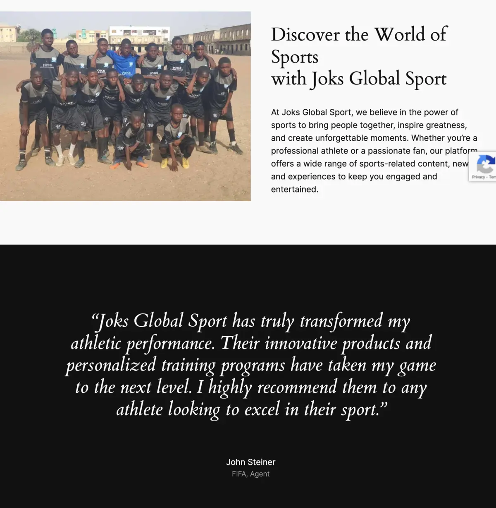
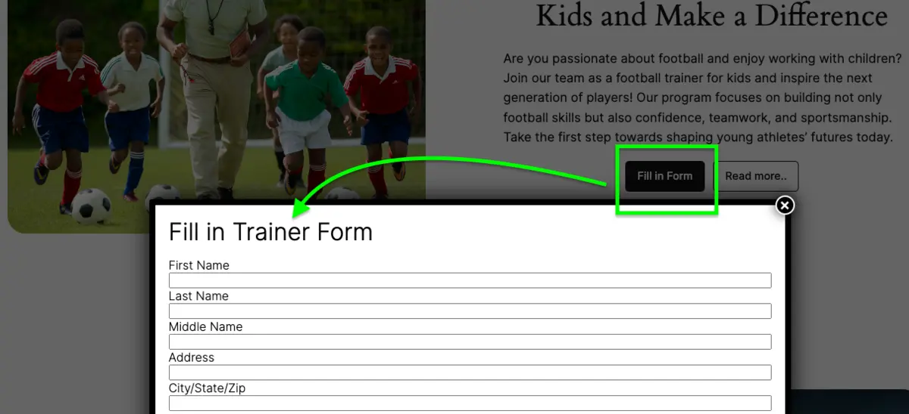
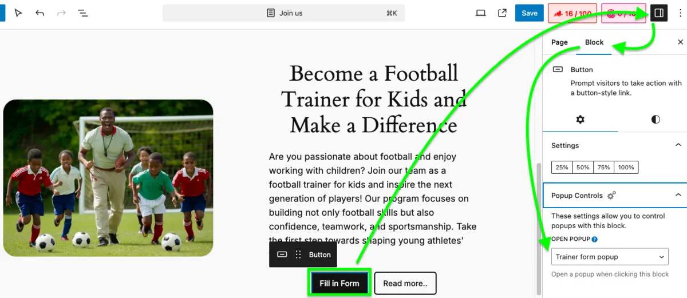
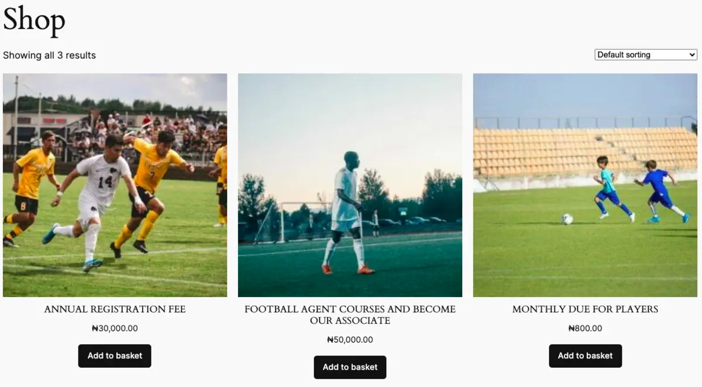
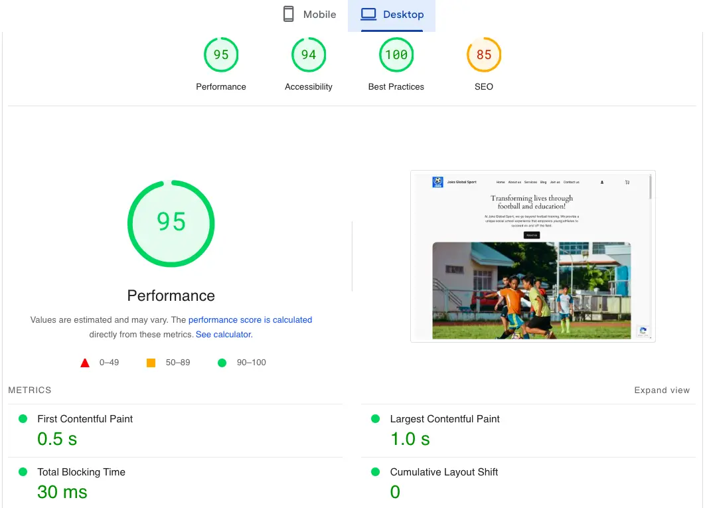

How I Built the Joks Global Sport Website: A Step-by-Step Guide
Published on August 15, 2024
Creating a professional website design that effectively communicates your brand's message and engages your audience can be a rewarding experience. In this article, I'll share how I developed the Joks Global Sport website from the ground up, highlighting the tools, WordPress plugins, and website design and development principles I used to transform a simple concept into a dynamic online platform. Whether you're a web developer or just starting, this guide will provide valuable insights into building a WordPress website.
Setting Up the Foundation
The first step in creating the Joks Global Sport website was to choose the right platform. For this project, I selected WordPress, a versatile and user-friendly content management system (CMS) that offers a wide range of customization options. WordPress is ideal for both beginners and experienced developers, thanks to its extensive plugin library and active community support, which makes it an excellent choice for WordPress website development services.
Choosing the Right Theme
To give the Joks Global Sport website a professional and modern website design, I selected the Twenty Twenty-Four theme. This theme is known for its responsive website design and clean layout, making it an excellent choice for sports websites.
Building the Content Structure
Next, I focused on building the content structure of the website, ensuring that all important information was easily accessible and organized.
Home Page Design
The homepage was designed to immediately grab the attention of visitors with a strong headline: "Transforming lives through football and education!" I used a high-quality football match image to visually reinforce the message and added a concise introduction about the company.

About Us
I created an "About Us" section to communicate Joks Global Sport's mission and core values. This section was designed to build trust and credibility with potential customers by showcasing the organization's commitment to sports development and education.
Testimonials. To highlight the success of our athletes, I added a testimonial from a former student, now a FIFA agent. Testimonials are powerful tools for building trust and demonstrating the impact of our custom website design on the careers of young footballers.
Adding Dynamic Content
To keep the website engaging and up-to-date, I added dynamic content using WordPress shortcodes, enhancing user experience and website SEO optimization.
Players Promotion Carousel
I used the Blog Designer Pack plugin with the "Carousel Layout" to showcase featured players and their achievements dynamically, making it a great addition to the web designer portfolio website.
- General Parameters:
- Selected “Design 2”
- Displayed: Title, Content (word limit = 28), and “Read More” button
- Hidden: Post date, author, tags, comments, and categories
- Slider Settings:
- Slides per view: 3
- Scroll per slide: 1
- Autoplay: Enabled (3000ms interval)
- Query Parameters:
- Total number of posts: 20
- Order: Post date in descending order
- Filter: “Players” category
If you want to use the same setup, copy and paste the shortcode below into your WordPress site:
[bdp_post_carousel design="design-2" show_date="false" show_author="false" ...]
Article Listings (Blog)
I also used the Blog Designer Pack shortcode [bdp_post_list show_author="false" show_comments="false" category="articles"]
to display recent articles. This feature helps improve website ranking on Google by keeping users informed about the latest news in football development and training.
After completing the homepage, I configured the other pages as requested by the client: About Us, Services, Blog, Join Us, and Shop pages. Navigate to Appearance > Themes > Customize > Navigation to add these pages to the menu before saving.
The About Us page consists of detailed information about the academy's mission, values, and services, including sections on grassroots football development, innovative strategies in player development, and soccer-related business opportunities.
The Services page outlines the academy's offerings, including grassroots football development, innovative training strategies, soccer promotion, and solutions for soccer-related challenges. Each section provides a deeper look into how the academy nurtures talent and supports the broader football community through good website design.
The Join Us page invites users to get involved, whether as aspiring footballers, trainers, or agents. It features opportunities for kids' football classes, becoming a football trainer, or applying to be a football agent. This page encourages active participation through simple website design.
To display popups, I installed the Popup Maker plugin. After creating three different popups with contact forms inside (using Contact Form 7), I navigated to the "Join Us" page, clicked on the button, then went to Settings > Block > Popup Controls, and selected the appropriate popup from the list.

As for the Blog page, I set it up with a masonry layout using the shortcode: [bdp_masonry show_author="false" show_tags="false" ...]
, providing insights, updates, and articles that reflect the academy's expertise and commitment to the sport. This setup ensures a visually appealing and organized display of blog posts.
After setting up the essential pages, including Home, About Us, Services, and Blog, it's important to ensure users have an easy way to connect through the Contact Us page. This page provides multiple contact options, including phone numbers, email, and physical office addresses in Osogbo and Kano, Nigeria. It also features a contact form where users can submit their inquiries directly. The layout is designed to be straightforward and user-friendly, ensuring that visitors can quickly find the information they need or reach out for support.
Creating Shop Using WooCommerce
The Shop page is vital for online sales, acting as the main point where customers make purchasing decisions. A clean, easy-to-use design can greatly enhance customer satisfaction and sales. I've designed this Shop page to be intuitive and visually appealing, ensuring a seamless shopping experience. To manage the online store, I installed the WooCommerce plugin, a powerful tool that makes it easy to sell products directly from the website. With WooCommerce, you can add products, manage inventory, process payments, and handle shipping, all within the WordPress platform. I customized the shop layout to align with the overall design of the website, ensuring a consistent and professional look across all pages.
Creating a Shop
After installing and activating the WooCommerce plugin, I configured it to display the football products available for sale, such as jerseys, boots, and training equipment. I made sure to add product descriptions, images, and pricing for a seamless shopping experience, integrating website landing page design best practices.
Optimizing for Performance
To ensure the Joks Global Sport website delivers an exceptional user experience and performs well in search engine rankings, I implemented key optimization strategies using specific plugins.
Accelerating Load Times: To enhance website performance, I utilized the Docket Cache plugin. This plugin implements persistent object caching, reducing server load and speeding up page delivery for a faster and more responsive website.
Compressing Photos: For image optimization, I used Image Resizer. This tool allowed me to efficiently crop, resize, and convert images to WebP format, optimizing them for the web. By compressing images without sacrificing quality, I ensured faster page load times and a better overall user experience.
Bot Protection: I employed CleanTalk Anti-Spam plugin to protect the website from spam. This plugin effectively filters out spam comments and registrations, ensuring the site remains free of unwanted and malicious content, and providing a cleaner user experience.
Search Engine Optimization: I used the Rank Math SEO plugin to optimize the website for search engines. This plugin enabled me to manage meta tags, optimize keywords, and enhance readability, ensuring that the Joks Global Sport website ranks well in search results and attracts more organic traffic.
Tracking User Behavior: To track site traffic and user behavior, I integrated Google Analytics via the Site Kit by Google plugin. This provided valuable insights into visitor interactions, helping guide future updates and improvements.
Conclusion
Building the Joks Global Sport website was a fulfilling project that combined technical skills with creative design. By carefully selecting the right tools and plugins, and by focusing on the user experience, I was able to create a professional and engaging website that effectively communicates the brand's message. Whether you're creating a business website design, a sports platform or a different type of site, the principles and techniques I've shared in this guide will help you achieve your goals.
Japalandia work abroad Landing Page

Model Agency site example